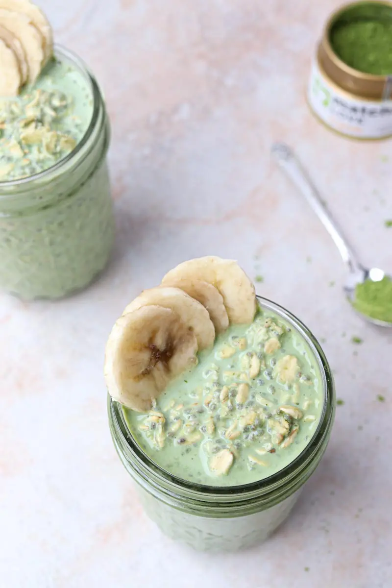
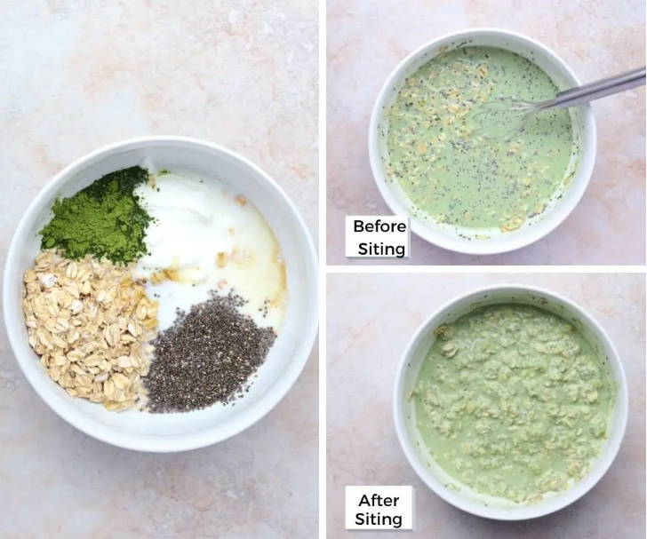
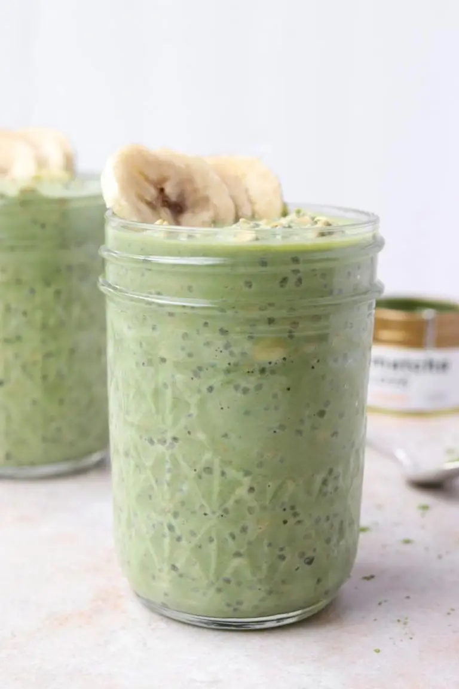

Matcha Overnight Oats makes a healthy and easy meal prep breakfast option for
when you're on-the-go or can be made as oatmeal in the morning.

This matcha oatmeal recipe is gluten-free, full of plant-based protein from Greek
yogurt and chia seeds and sweetened with honey and splash of vanilla extract.
Sometimes I'll have matcha with breakfast....usually in drink form, but why not
enjoy matcha in more ways than just drinks? How about, breakfast? Yes!
I love breakfast, but sometimes I find I need variety. EAting thes ame old things gets
boring after awhile. If oatmeal is a go-to for you like it is me then findg ways to
change it up is a must!
If you've never had matcha before, it tastes earthy and nutty. It leans more on the
bitter side, but I think it has some sweetness as well. It's definitely a flavor not
everyone is a fan of, but personally, I love it!
Matcha has been studied for its numerous potential health benefits. If you're
interested in learning more about this antioxidant-rich powder, check out this
article: Top 5 Matcha Benefits.
So, if you're a matcha fan like myself or want to try a new hip overnight oats
recipe, keep readin'!
Below is a collage of all the ingredients in a bowl and the before and after letting it
sit. I use a whisk to help the matcha powder dissolve but a fork works too.
Essentially, just measure and dump the ingredients in a bowl or jar and mix well.
It'll be thin after you first mix it, but thicken with time as the oats absorb the
surrounding liquid and soften. After 2 hours, the oats should look like the picture
in the bottom right corner.

I do an equal ratio of oats to liquid and add a small amount of yogurt. I find the
texture thickens up well with this ratio, plus the chia seeds help. If you like
your oats thiner, add more almond milk. If you find you need it thicker, add more
chia seeds.
Refrigerate overnight and grab and go in the morning! You can serve the oats hot
or cold, whichever you prefer. Do you eat your overnight oats cold or heat them
up? I've been finding I like warming them up a bit before to change it up, but cold
oats work well when you're in a pinch!
